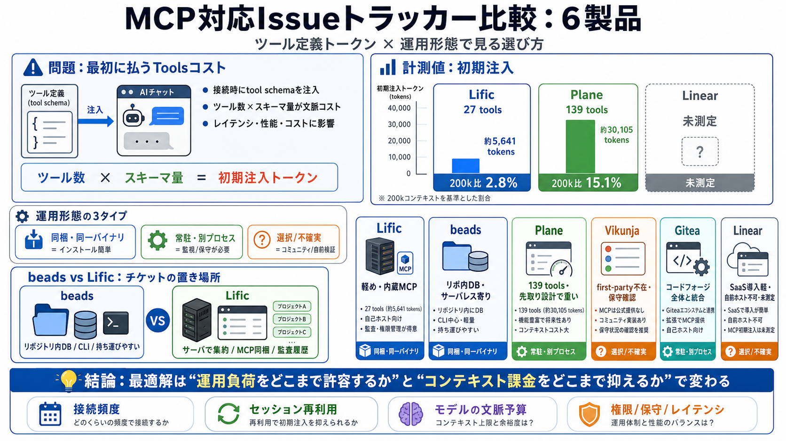

lific
1. To set apart for divine or spiritual purposes and uses. 2. To vivaciously commit (oneself) to a particular course of …

MCP経由で課題管理システムと連携する6製品を、「ツール定義のトークン量」と「運用形態」で比較します。
対象：Lific / beads / Vikunja / Gitea / Plane / Linear（英語用語は原文併記、必要箇所のみ日本語）
MCPでは接続時にツール一覧とスキーマ（tool schema）がAIのコンテキストに注入されます。つまり「実際の作業」より前に、説明文だけでトークンを消費します（context cost / 文脈コスト）。
ツール数 × スキーマ量
起動直後の負担が大きい
レイテンシ / 性能 / コスト
モデルの有効コンテキストを圧迫
どの製品がfirst-party（第一者）としてMCPサーバを提供するか、さらに「別プロセス運用」が必要か、CLI等で済むかを押さえると比較が読みやすくなります。
同一バイナリ
インストールが簡単
別プロセス
監視・保守が必要
コミュニティ/自前
検証とスコープ確認
計測の焦点は「接続直後に注入されるツール定義トークン」です。ツール数が多いほど、最初のコンテキスト負担が増えやすい構造になります。
| 製品 | ツール数 | スキーマトークン（目安） | 200k比 |
|---|---|---|---|
| Lific | 27 | 約 5,641 | 2.8% |
| Plane | 139 | 約 30,105 | 15.1% |
| Linear | （引用） | 未測定 | — |
※本文ではLificとPlaneはトークン量まで言及、Linearはホスト側事情によりスキーマトークン未測定とされています。
「どれだけの運用負荷を許容するか」と「コンテキスト課金をどこまで抑えるか」で、最適な製品は変わります。
Lificが相対的に有利
内蔵MCP＋小さめの文脈請求（ただしツールごとのスキーマがやや重い）
Planeは突出
139ツール・約30,105トークンで接続直後が重くなり得る
最大の違いは「チケットの置き場所」です。beadsはリポジトリ内DBで、Lificはサーバ型で複数プロジェクトを集約します。
サーバレス寄り
CLI＋埋め込みDB / チケットをリポジトリに“同梱”して持ち運ぶ
サーバ常駐
同一バイナリでトラッカー＋MCP（人間向けWeb UIや監査履歴も同梱）
Planeはツール数とスキーマ量が突出しており、「最初から大量に読み込む」設計思想が現れていると結論づけられています。
139 tools
接続直後の注入が増える
約 30,105 tokens
200kモデル比 15.1%
APIミラー型
CRUD派生で全体を先取りしやすい
Vikunja/Gitea/Linearは「第一者MCPサーバの有無」や「統合の範囲」で性格が分かれます。導入前に、スコープと運用体制を確認するのが安全です。
first-party不在
コミュニティサーバを選び、スコープと保守性を検証
場を統合
コードフォージ全体にMCP接続（トラッカー単体より広く、ツールも多め）
SaaSで導入軽
ただし自前ホスティング不可／測定にはワークスペースログインが必要
スキーマ未測定
ホストMCPがログイン背後にあり、同様計測ができなかった
MCP対応の意味、ツール数が効く理由、そしてLificとbeadsの最重要な差を先に掴むと比較が速くなります。
決まった形式でツール呼び出し
検索/作成/更新/コメント。接続時にスキーマ注入。
説明文が先に入る
起動時にツール定義をまとめて取得→トークン消費。
チケットの置き場所
beadsはリポ内DB、Lificはサーバで集約。
この比較は「ツール定義トークン」に強い一方、セッション再利用頻度や、認証/権限・レイテンシ実測などは未比較です。
初期コストは償却され得る
毎回新規セッションか、再利用する設計かで影響が変わる。
権限・権用設計が未深掘り
ロール最小権限、SSO有無などの詳細は未提示。
Linearのスキーマトークン
ホストMCPがログイン背後で計測できず。
メンテ偏在・可用性
bus factorや、クラウド提供の有無が継続性に影響。
「こう選べ」と断定するより、自分のエージェント構成（セッション再利用、モデル種別、コンテキスト予算、運用制約）に照らして検証するのが安全です。
接続頻度 × 初期注入
毎回支払うなら軽量モデルが効く。
権限/保守/レイテンシも確認
“使える”だけでなく“運用できる”形に整える。
参考：監査履歴（誰がどの経路で変更したか）は、安全性・ガバナンス面で価値になり得ます。
1. To set apart for divine or spiritual purposes and uses. 2. To vivaciously commit (oneself) to a particular course of …
###### Hello. So, take your time, look around, and learn all there is to know about us. We hope you enjoy our site. Copy…
Lific Lifix Megga sounds Kampala, Central Region, Uganda 1 connections, 1 followers About None Experience N/A Educ…
Trim Lific. 1395 likes. Public figure. Trim Lific (@trim.lific) • Facebook. Danielle Burlison and 22 others. Advanced ta…
# Definitions for lific lif·ic. #### This dictionary definitions page includes all the possible meanings, example usage …